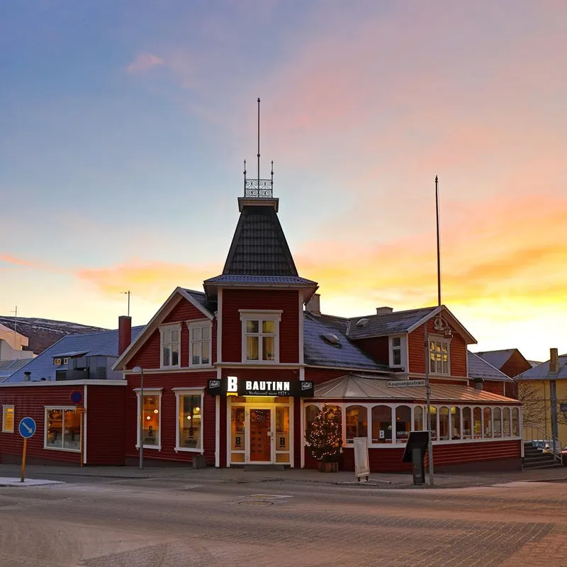
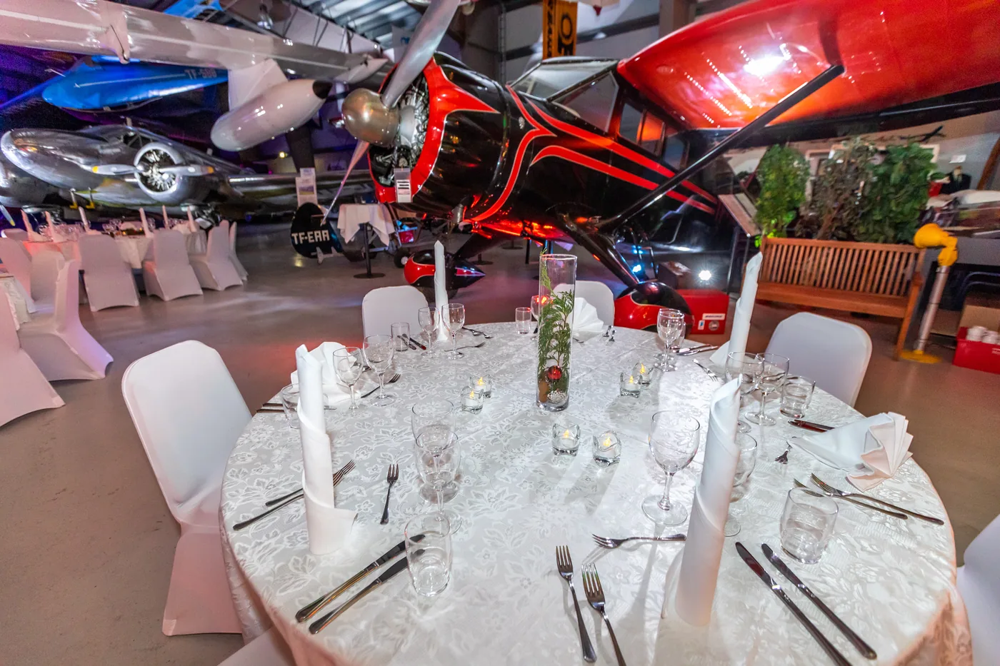

Bautinn · síðan 1971
Hús með sögu.
Staður fyrir alla.
Í einu af elstu húsum Akureyrar hefur fólk hist yfir góðum mat í meira en hálfa öld. Bautinn er hlýr, beinskeyttur og alltaf tilbúinn að taka á móti þér.
Heimilisfang
Hafnarstræti 92
600 Akureyri
Opið í dag
Sjá opnunartíma
Samband
Leiðin
Opna kort ↗
Húsið okkar
Meira en hálf öld við sama hornið.
Bautinn opnaði 6. apríl 1971. Húsið sjálft var reist árið 1902 og er eitt af elstu húsum bæjarins.
- 1902
Húsið við Hafnarstræti 92 er reist.
- 1971
Bautinn opnar dyrnar 6. apríl.
- 2018
Einar Geirsson og Heiðdís Fjóla Pétursdóttir taka við rekstrinum.
- 2019
Eldofninn kemur í húsið og Pizzasmiðjan opnar undir sama þaki.
Ofninn
Sami eldur. Tveir matseðlar.
Úr eldofninum koma pizzurnar frá Pizzasmiðjunni. Þær eru bornar fram hér á Bautanum allan daginn.
Skoða PizzasmiðjunaVeislur og hópar
Matur fyrir tilefni sem skipta máli.
Bautinn og Rub 23 sjá um veitingar fyrir hópa frá tólf manns—árshátíðir, brúðkaup, afmæli, þorrablót og jólahlaðborð.
Senda fyrirspurn
Bautinn · síðan 1971
Smá innsýn.
Borð og opnunartímar
Komdu við á Bautanum.
Á sumrin tekur Bautinn á móti gestum án borðabókunar. Fyrir hópa með fleiri en átta gesti er best að hafa beint samband.
Fleira hjá K6